Kurz gesagt: Profil anlegen → Schlüssel erzeugen und sichern → GitHub-Token eintragen →
nach jeder neuen Version „Von GitHub laden, signieren und hochladen“ → erst danach verteilen.
1. Worum es geht – Grundbegriffe
Eine Software, die sich selbst aktualisiert, muss erkennen können, ob ein Update echt ist. Dafür
signierst du jede Version: Das Werkzeug bildet über alle Dateien einer Version eine Prüfsumme und
unterschreibt diese Liste mit deinem privaten Schlüssel. Die installierte Software kennt nur deinen
öffentlichen Schlüssel und kann damit nachrechnen, ob jede Datei genau so ist, wie du sie signiert hast.
Begriff
Bedeutung
Privater Schlüssel
Bleibt auf deinem Rechner, mit Kennwort verschlüsselt (Ed25519). Wer ihn hat, kann in deinem Namen signieren – deshalb nie weitergeben, nur sichern.
Öffentlicher Schlüssel
44 Zeichen Base64, z. B. Fy29YaD6…qVsc=. Steht in der Software, die prüft. Darf jeder sehen.
Fingerabdruck
Kurzform des öffentlichen Schlüssels in Vierergruppen. Zum Vergleichen über einen zweiten Weg (Telefon, persönlich).
SIGNATUR.json
Liste aller Dateien mit Prüfsumme, Version und Signatur. Liegt im Wurzelordner der Version.
SIGNATUR-BAU.json
Nur Speedrace-Dashboard: Signatur der Bau-Dateien (Dockerfile, docker-compose.yml, tools/ …), aus denen das Docker-Image entsteht.
Tag v<Version>
Markiert auf GitHub genau den signierten Stand, z. B. v1.8.12. Das Werkzeug setzt ihn selbst und verschiebt ihn nie.
Profil
Eine Software mit ihrem eigenen Schlüssel, Repository und ihren Regeln, welche Dateien signiert werden.
Abbildung 1: Aus den Dateien einer Version entsteht SIGNATUR.json.
Welche Dateien werden signiert?
Profil
Signiert
Nie signiert
Speedrace-Dashboard
Genau die Update-Dateien, die das Dashboard selbst festlegt (UPDATE_ALLOWED_FILES/…_DIRS in app.py); dazu die Bau-Dateien in SIGNATUR-BAU.json.
Alle Dateien außer den Ausnahmen des Profils (z. B. logs/*, *.log). Groß-/Kleinschreibung zählt.
2. Start, Oberfläche, Updates
Start:Signier-Werkzeug.exe doppelklicken. Das Werkzeug öffnet sich im Browser
(nur auf diesem Rechner, unter 127.0.0.1, mit einem Zufallsschlüssel in der Adresse). Beim
ersten Start warnt Windows evtl. „Der Computer wurde durch Windows geschützt“ – „Weitere Informationen“ →
„Trotzdem ausführen“.
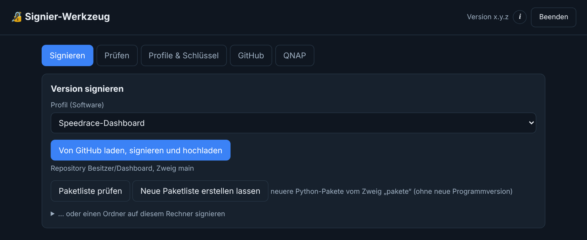
Abbildung 2: Startseite – oben die Reiter, rechts Version, „i“ (dieses Handbuch) und „Beenden“.
Nur eine Instanz: Ein zweiter Start öffnet die laufende Seite, statt ein zweites Werkzeug zu starten.
Beenden: mit „Beenden“. Läuft gerade etwas (Signieren, Hochladen, ein offenes Auswahlfenster), wird das abgelehnt, damit nichts halb erledigt bleibt. Ohne geöffnete Seite beendet sich das Werkzeug nach 10 Minuten von selbst – nie mitten in einem Vorgang.
Updates: Gibt es eine neuere Version, erscheint oben „Update“. Ein Klick lädt sie, prüft die Signatur des Herausgebers und startet neu. Ohne gültige Signatur ändert sich nichts.
Zwei Tabs: Hast du dasselbe Profil in zwei Tabs offen, lehnt das Werkzeug das Speichern aus dem älteren Tab ab („inzwischen geändert – neu laden“) – nichts wird still überschrieben.
3. Profile und Schlüssel
Im Reiter Profile & Schlüssel legst du je Software ein Profil an: „+ Profil „Speedrace-Dashboard““ für das
Dashboard (feste Regeln) oder „+ Profil für andere Software“.
Name, Regel („Welche Dateien werden signiert?“), GitHub-Repository (Besitzer/Name) und Zweig eintragen.
Bei „andere Software“: Ausnahmen, je Zeile ein Muster – z. B. logs/* (ganzer Ordner) oder *.log. Ausnahmen gehören zum „Vertrag“ mit der Software: Änderst du sie, muss die Software sie gleich ändern.
„Speichern“.
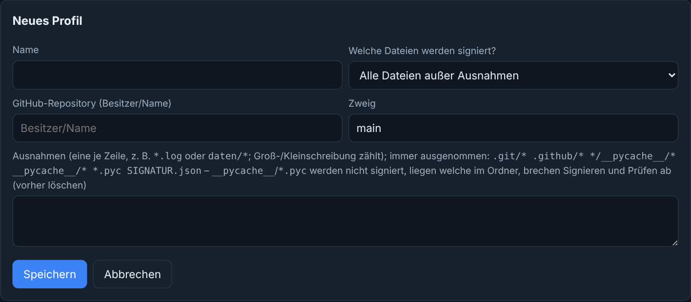
Abbildung 4: Neues Profil.
Schlüssel erzeugen oder übernehmen
Neuen Schlüssel erzeugen: Kennwort (mind. 12 Zeichen) zweimal eingeben. Das Kennwort wird nirgends gespeichert – gut aufbewahren.
Vorhandenen Schlüssel übernehmen:.pem-Datei wählen und ihr Kennwort eingeben.
Danach zeigt das Profil den öffentlichen Schlüssel mit „Kopieren“ – diesen trägst du dort ein, wo geprüft wird (beim Dashboard z. B. SR_UPDATE_SCHLUESSEL).
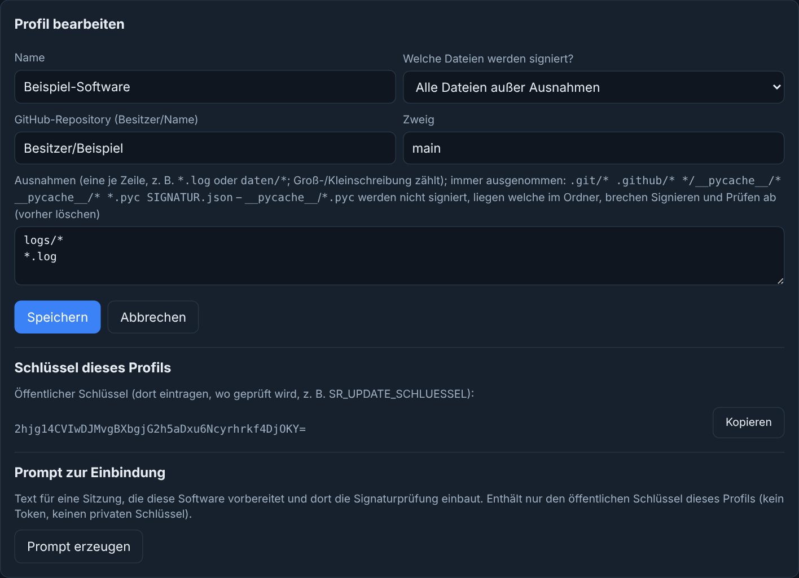
Abbildung 5: Profil mit Schlüssel und Prompt zur Einbindung.
Sichern! Kopiere den Ordner schluessel im Datenordner (Reiter „Profile & Schlüssel“ → „Sicherung“ → „Ordner öffnen“) auf einen USB-Stick. Ohne Schlüssel kannst du keine neuen Versionen mehr signieren, die die installierte Software annimmt.
Schlüsseldatei fehlt? Ist für ein Profil schon ein öffentlicher Schlüssel hinterlegt, die Datei aber weg (z. B. auf den USB-Stick verschoben), zeigt das Werkzeug „Schlüsseldatei fehlt“ und lässt nur die passende gesicherte Datei wieder zu. Ein neuer Schlüssel würde die Prüfung in der Software brechen – dafür ein neues Profil anlegen.
Profil löschen: Die Schlüsseldatei wird nicht gelöscht, sondern umbenannt (….geloescht-Datum).
4. GitHub-Zugang
Zum Laden und Hochladen braucht das Werkzeug ein Fine-grained Token:
Das Werkzeug lädt den Stand des Zweigs, prüft ihn, signiert, lädt SIGNATUR.json (beim Dashboard auch SIGNATUR-BAU.json) in einem Commit genau auf diesen Stand hoch und setzt den Tag v<Version>.
Erst jetzt die Version verteilen bzw. das Update einspielen.
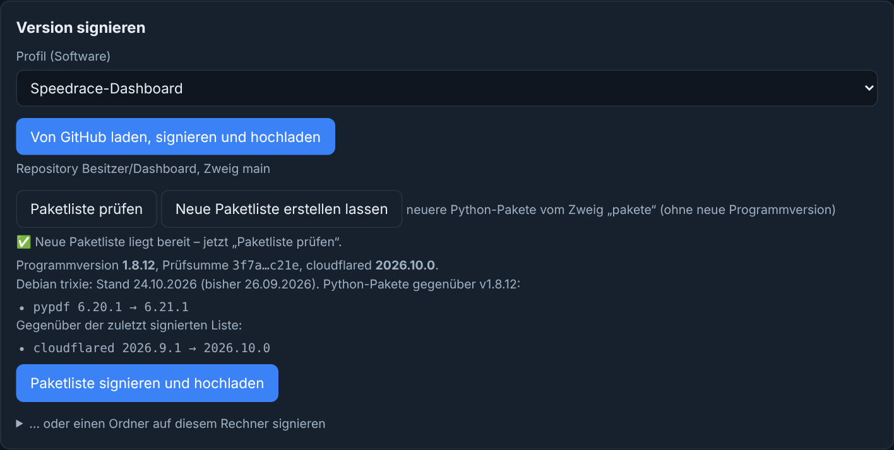
Abbildung 8: Reiter „Signieren“ mit dem Speedrace-Profil (unten das Beispiel einer geprüften Paketliste, Kapitel 6).
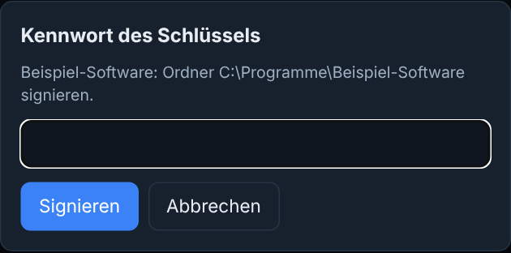
Abbildung 9: Abfrage des Kennworts vor dem Signieren.
Sicherheitsregeln beim Hochladen: Hat jemand zwischendurch etwas auf den Zweig gepusht, bricht das Werkzeug ab. Gibt es den Tag schon, bricht es ab, bevor etwas hochgeladen wird – ein Tag wird nie verschoben. Erneutes Signieren derselben Version lädt nichts doppelt hoch, sondern setzt nur einen fehlenden Tag.
Einen Ordner auf diesem Rechner signieren
„… oder einen Ordner auf diesem Rechner signieren“ aufklappen, Ordner wählen, „Ordner signieren“. Signiert werden alle
Dateien darin – auch nicht eingecheckte (z. B. Thumbs.db). Für genau den Repository-Stand
besser den GitHub-Weg nehmen. Liegt dort eine SIGNATUR.json mit fremdem Schlüssel, wird sie vorher im Datenordner gesichert.
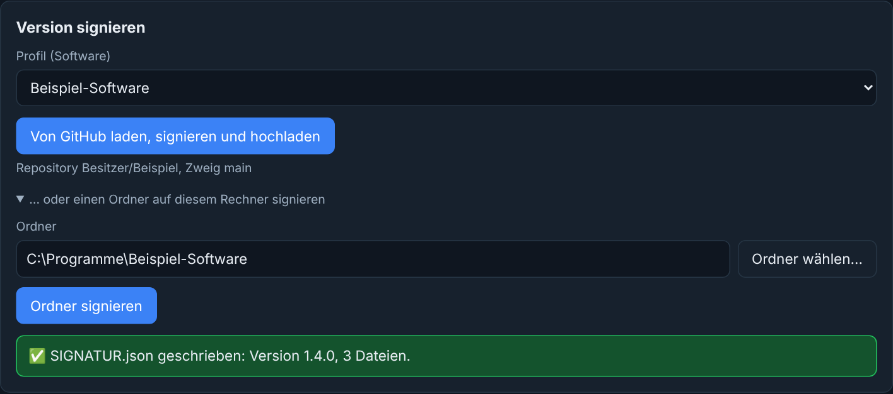
Abbildung 10: Ordner signiert.
Kompilierte Python-Dateien (__pycache__, *.pyc) werden nicht signiert, würden aber geladen. Liegen welche im Ordner, brechen Signieren und Prüfen ab – vorher löschen.
6. Paketliste signieren (Speedrace-Dashboard)
Neuere Python-Pakete – und, falls angegeben, cloudflared und ein getesteter Stand der Debian-Systempakete
(OpenSSL, LibreOffice …) – sollen ohne neue Programmversion zu den Dashboards kommen –
aber nur getestet und von dir signiert.
Abbildung 11: Weg einer Paketliste.
Optional: „Neue Paketliste erstellen lassen“ startet die Action des Dashboards auf GitHub (sonst läuft sie wöchentlich von selbst). Das Werkzeug zeigt den Fortschritt (oft 10–30 Minuten). Danach: „Neue Paketliste liegt bereit“ – oder „keine neue Liste“ (keine neueren Pakete oder ein Test war rot; dann gibt es ein Issue im Repository). Das Token braucht dafür zusätzlich Actions: Read and write.
Reiter Signieren, Speedrace-Profil wählen → „Paketliste prüfen“ (ohne Kennwort). Angezeigt werden Programmversion, Prüfsumme, cloudflared-Version, der Debian-Stand (z. B. „Debian trixie: Stand 24.10.2026 (bisher 26.09.2026)“) die geänderten Pakete gegenüber dem Tag (z. B. „pypdf 6.20.1 → 6.21.1“, auch „Prüfsummen geändert“ bei gleicher Version) und, getrennt davon, was sich gegenüber der zuletzt signierten Liste geändert hat (cloudflared, Wegfall einer Zeile). „bisher unbekannt“ heißt: die vorige Liste ließ sich nicht ermitteln – dann selbst nachsehen. Ändert sich nur cloudflared oder der Debian-Stand, ist die Liste trotzdem zu signieren.
Änderungen ansehen. Passt alles: „Paketliste signieren und hochladen“ → Kennwort.
SIGNATUR-PAKETE.json landet in einem Commit auf dem Zweig „pakete“. Nichts an main, kein Tag.
Das Werkzeug signiert nur, wenn die Liste zu einer gültig signierten Programmversion gehört (Tag v<Version> mit gültiger SIGNATUR.json), und genau die Liste, die du gesehen hast. Ist sie schon gültig signiert, meldet es „bereits signiert“. Enthält die Liste etwas anderes als Pakete mit Prüfsummen (z. B. --index-url, -r oder einen Direkt-Link), signiert es nicht – pip würde das übernehmen, ohne dass die Anzeige es zeigt.
7. Signatur prüfen
Reiter Prüfen: Profil wählen, dann „Stand auf GitHub prüfen“ (Zweig des Profils) oder einen Ordner wählen und
„Ordner prüfen“. Das Werkzeug rechnet jede Datei nach.
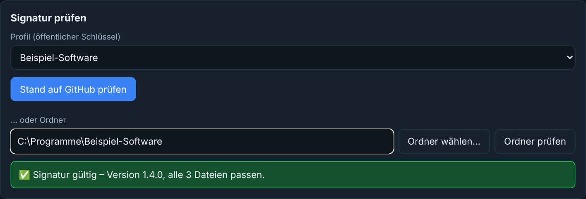
Abbildung 12: Alles in Ordnung.
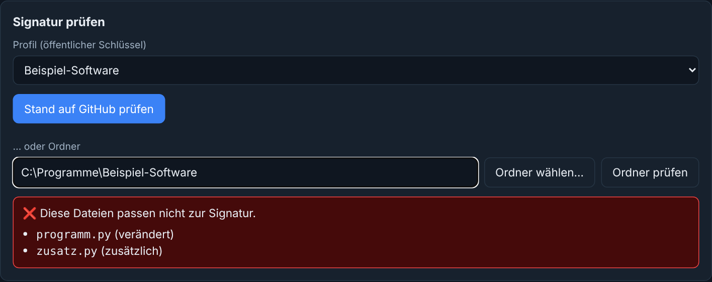
Abbildung 13: Abweichungen – jede betroffene Datei mit Grund (verändert, zusätzlich, fehlt).
Beim Speedrace-Dashboard werden zusätzlich die Bau-Dateien geprüft; eine angepasste docker-compose.yml ist bei einem Ordner nur ein Hinweis (sie wird vor Ort angepasst). Beim Stand auf GitHub heißt dieselbe Abweichung „nach dem Signieren geändert“.
8. QNAP: Dashboard auf dem NAS installieren
Der Reiter QNAP führt Schritt für Schritt durch die Arbeit auf dem NAS. Jeder Befehl wird vorher gezeigt und
erst nach deiner Bestätigung in einem eigenen Konsolenfenster (Windows-ssh) ausgeführt. Dein Passwort tippst du nur
dort – das Werkzeug sieht es nicht.
Vorbereitung
In QTS: Systemsteuerung → Netzwerk- & Dateidienste → Telnet/SSH → „SSH-Verbindung zulassen“; unter Windows 11 zusätzlich „SFTP aktivieren“.
Signierte Version (Tag) laden und prüfen → hochladen → Container anhalten → alten Ordner beiseitelegen → entpacken → eigene docker-compose.yml vergleichen (und ggf. übernehmen) → Bau-Dateien prüfen → neu bauen → starten → kontrollieren → optional aufräumen.
Nur neu bauen
Gleiche Version, neues Image – z. B. für aktuelle Systempakete oder ein neues cloudflared.
Zur vorigen Version zurück
Den beiseitegelegten Ordner zurückholen, prüfen, (falls nötig) neu bauen und starten.
Aufräumen
Beiseitegelegten Ordner endgültig löschen, hochgeladene ZIP und alte Images entfernen – erst, wenn die neue Version läuft. Am Ende zeigt es den Elternordner: übrige ….kaputt-…/….entpacken-…-Ordner von Hand löschen.
Abbildung 15: „Neue Version installieren“ – solange der alte Ordner gemerkt ist, gibt es einen Rückweg.
So arbeitest du einen Schritt ab
Ablauf wählen → „Ablauf beginnen“. Freigegeben ist immer nur der nächste Schritt.
Erklärung lesen. Der Befehl steht im grauen Feld („Kopieren“ für eigene Notizen).
Zurück im Werkzeug: „Hat geklappt“ oder „Fehler“ melden. Bei „Fehler“ helfen die „Typischen Fehler und Abhilfe“.
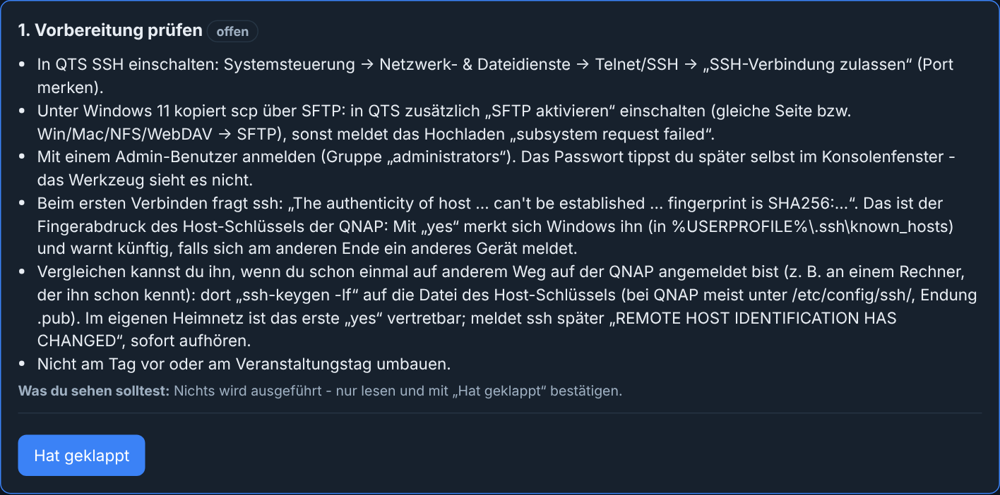
Abbildung 16: Erster Schritt – nur lesen und bestätigen.
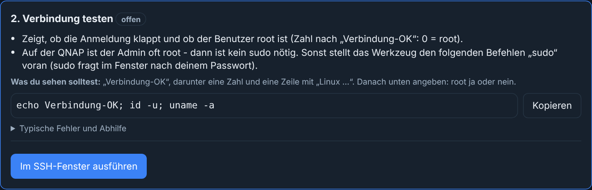
Abbildung 17: Ein Schritt mit Befehl.
Eigene docker-compose.yml
Die neue Version bringt die signierte docker-compose.yml mit. Hast du deine auf der QNAP angepasst
(Port, SR_UPDATE_SCHLUESSEL, SR_UID/SR_GID,
.:/app:ro), wären diese Änderungen sonst weg. „docker-compose.yml vergleichen“ zeigt die
Unterschiede (Zeilen mit „-“: signierte Fassung, „+“: deine). Weichen nur deine eigenen Anpassungen ab:
„Eigene docker-compose.yml übernehmen“ – die Bau-Prüfung meldet danach bewusst Ergebnis 1. Bringt die neue Version
selbst Änderungen an der Datei, überspringen und deine Anpassungen nachher von Hand eintragen.
Im Tag selbst ist jede Abweichung einer signierten Bau-Datei – auch der docker-compose.yml –
ein Grund, nicht zu installieren: Dort gibt es nichts „vor Ort Angepasstes“.
Bau-Prüfung vor jedem Neubau
Abbildung 18: Ergebnis der Bau-Prüfung (app.py --bau-pruefen).
Steht statt „Ergebnis=…“ „Ergebnis fehlt“, lief keine Prüfung (z. B. sudo-Kennwort falsch, Container läuft nicht) – „Fehler“ melden.
Ergebnis 2 sperrt den Neubau für genau diese Dateien. Kommt ein anderer Stand in den Programmordner (neue Version, Rückweg), fällt die Sperre. „Bau-Sperre aufheben“ nur, wenn du die Bau-Dateien selbst aus der signierten Version neu geholt hast.
Hat die Installation noch kein neues Image gebaut (z. B. ohne Internet), darf der Rückweg den Neubau überspringen.
Nicht am Tag vor oder am Veranstaltungstag umbauen. Das Werkzeug fasst im Elternordner nur den Programmordner, die selbst angelegten ….alt-…/….kaputt-…/….entpacken-…-Ordner und die eigenen ZIPs an – den Daten-Ordner nie. Alles steht im Protokoll („Ordner mit Protokoll öffnen“).
9. Andere Software einbinden (Prompt zur Einbindung)
Für ein Profil „andere Software“ mit Schlüssel erzeugt „Prompt erzeugen“ einen Text für eine KI-Sitzung, die im
Repository dieser Software die Prüfung einbaut: mit öffentlichem Schlüssel, Fingerabdruck, Ausnahmen, Regeln, Ablauf
und dem Prüfmodul Pruefmodul/signatur_pruefen.py. Er enthält kein Token und keinen privaten Schlüssel.
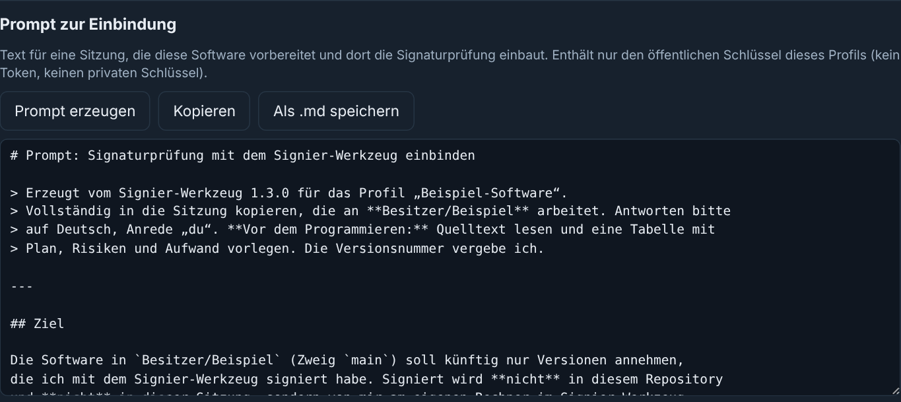
Abbildung 19: Prompt zur Einbindung – „Kopieren“ oder „Als .md speichern“.
Der Schlüssel ist in der Software nur Voreinstellung; ersetzen darf ihn nur der Betreiber (Umgebungsvariable/Admin-Einstellung), nie eine Datei aus einem Update.
Tags setzt nur das Signier-Werkzeug – keine automatischen Tag-Workflows in der Software.
Die Software prüft vor dem Installieren und installiert genau den geprüften Ordner.
10. Das Werkzeug selbst veröffentlichen (Herausgeber)
Nur für den Herausgeber des Signier-Werkzeugs (Reiter GitHub → „Signier-Werkzeug selbst“, Abbildung 6):
VERSION in signier_werkzeug.py erhöhen und nach main bringen.
„Bau starten (Tag setzen)“: setzt v<Version> auf main; GitHub baut die exe (feste Paketversionen, Tests, Selbsttest, Herkunftsnachweis) und legt einen Entwurf an. Fortschritt: „Bau-Status prüfen“.
„Neuen Entwurf signieren und veröffentlichen“ → Kennwort: prüft die Herkunft der exe (Prüfsumme aus dem Bau, Tag auf dem gebauten Commit, Commit auf main), signiert sie und veröffentlicht das Release. Erst dann sehen andere Installationen das Update.
11. Meldungen und was zu tun ist
Meldung (sinngemäß)
Bedeutung und Abhilfe
VERSION fehlt oder hat nicht die Form x.y.z / beginnt mit einem BOM
VERSION korrigieren (z. B. 1.4.0, UTF-8 ohne BOM), committen, erneut signieren.
Tag v… gibt es schon
Diese Version ist schon vergeben. Neue Versionsnummer vergeben – Tags werden nie verschoben.
Bau-Dateien im Tag passen nicht zu SIGNATUR-BAU.json – nach dem Signieren geändert
Nicht installieren. Jemand hat nach dem Signieren etwas geändert und den Tag verschoben – klären, Version neu signieren.
PAKETE.lock, Zeile …: erlaubt sind nur „paket==version“ mit Prüfsummen
Nicht signieren. Die Liste enthält pip-Optionen oder Direkt-Links – Herkunft der Liste klären.
Auf GitHub hat sich zwischendurch etwas geändert
Jemand hat gepusht. Einfach noch einmal signieren.
Unklar, ob die Signatur auf GitHub angekommen ist
Netzproblem. Später erneut signieren (lädt nichts doppelt hoch, setzt nur den Tag). Bis dahin nicht verteilen.
Kompilierte Python-Dateien gefunden
__pycache__-Ordner und *.pyc löschen.
„…“ hat eine andere Schreibweise als „VERSION“/„SIGNATUR.json“
Datei genau so benennen (Groß-/Kleinschreibung).
Kennwort falsch oder Schlüsseldatei beschädigt
Kennwort prüfen; notfalls die gesicherte Schlüsseldatei übernehmen.
Profil wurde inzwischen geändert
Seite neu laden und die Änderung erneut eintragen.
Diese Dateien passen nicht zur Signatur
Etwas wurde verändert oder hinzugefügt. Nicht installieren – Version neu holen.
QNAP: Ergebnis fehlt – keine Prüfung gelaufen
Ausgabe im Fenster ansehen (sudo, Container, Docker-Variante), „Fehler“ melden, Hilfe beachten.
QNAP: subsystem request failed
In QTS „SFTP aktivieren“ und den Schritt wiederholen.
12. Daten, Sicherung und Sicherheit
Was
Wo (Datenordner %APPDATA%\Signier-Werkzeug)
Profile, Einstellungen
profile.json
Private Schlüssel (verschlüsselt)
schluessel\ – auf USB-Stick sichern
Gesicherte fremde Signaturen
sicherung\
QNAP-Profil, Ablauf, Protokoll
qnap.json, qnap-protokoll.txt
Was das Werkzeug für dich absichert
Die Oberfläche läuft nur auf diesem Rechner; jede Anfrage braucht den Zufallsschlüssel der Sitzung.
Das Token geht nur an GitHub und wird in Meldungen geschwärzt.
Archive von GitHub werden vor dem Entpacken geprüft (keine Pfade nach außen, keine Verknüpfungen, Größen- und Mengengrenzen).
Dateien werden atomar geschrieben – ein Abbruch hinterlässt keine halbe SIGNATUR.json.
Updates des Werkzeugs werden nur mit gültiger Signatur des Herausgebers eingespielt.
Ausführlich: README.md und SICHERHEIT.md im Repository {{REPO}}.